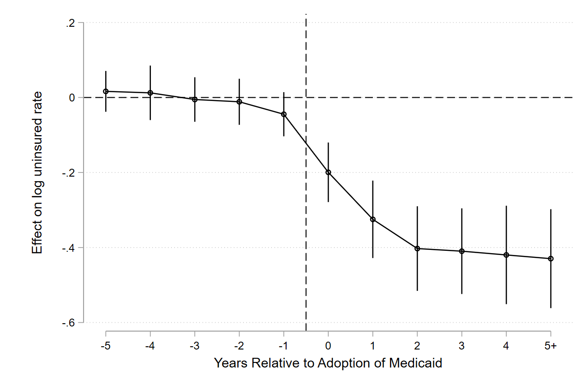

About
I am a Pre-Doctoral Fellow at the Harvard Kennedy School, where I work with Gordon Hanson on the Reimagining the Economy project, where I work on various projects related to immigration, urban policy, and local labor markets, with an overarching thesis of studying local prosperity and resilience to economic shocks, and to evaluate industrial and place-based policy. I also collaborate with Brittany Street, Emily Weisburst, and Felipe Goncalves on a project examining how historical transportation infrastructure (railroads and highways) affects modern crime outcomes.
My research interests are in urban and applied microeconomics, including housing affordability and supply, neighborhood effects and segregation, transportation and spatial mobility, and place-based policy. I hold B.S. degrees in Economics, Mathematics, and Statistics from the University of Missouri, and I plan to pursue a Ph.D. in economics.
Contact
- Email jfmartin@hks.harvard.edu · martin.john105@gmail.com
- GitHub jfmt3v
- LinkedIn john-f-martin85
- ORCID 0009-0006-4501-1338
Research
Interests
- Urban and Labor Economics
- Immigration
- Place-Based Policy
- Criminal Justice
- And much more!
Working Papers
Abstract
The 2010 Patient Protection and Affordable Care Act (ACA) allowed states to expand Medicaid eligibility to nearly all low-income adults beginning in 2014. Its coverage gains are well-documented, but less is known about who pays for uninsured care and whether expansion removes this burden. I leverage the staggered timing of state adoption in a difference-in-differences design and follow expansion from insurance coverage to emergency department (ED) payers, and finally to the finances of rural hospitals. First, I find that expansion reduced the uninsured rate by roughly 26–29%, raised Medicaid enrollment by 32–42%, and reduced private insurance enrollment by about 3%. Second, total ED visits did not change detectably, but Medicaid-paid visits rose by more than half, while self-pay and no-charge visits fell by over 40%. Finally, I follow this payer shift to roughly 2,300 rural hospitals from 2011–2019. Expansion cut charity care for uninsured patients by more than half, and their bad debt by more than a quarter. This occurred with little change in inpatient volume. Part of this relief was offset by a rise in the unreimbursed cost of treating Medicaid patients, leaving net relief of about half a million dollars a year for the average hospital. In short, at the emergency department and rural hospitals, expansion changed how care is financed far more than the volume of care provided.

Event study: effect of expansion on the log uninsured rateWork in Progress
- The Distribution of Crime and Policing in the United States
Technical Skills
Programming
- Stata
- Python
- R
- LaTeX
Tools
- Jupyter, RStudio
- Overleaf
- Git/Github
Presentations & Conferences
- American Real Estate and Urban Economics Association (AREUEA) National Conference — Washington, DC
- University of Missouri Economics Alumni Board — Columbia, MO
- ASA DataFest — Columbia, MO
- Midwest Economics Association Annual Conference — Kansas City, MO
- TRIO McNair Scholars Conference — Columbia, MO